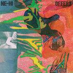

Music Reviews
-
Stormzy Gang Signs and Prayer
The debut studio album by British grime MC Stormzy gives a voice to both the street and religious sides of his life. He is not the best pound-for-pound spitter, but he is certainly climbing the ladder and getting close.
Michael J. Barilleaux reviews... -

Grandaddy Last Place
The veteran California indie rock band return with their first album in ten years, where elusive frontman Jason Lytle allows himself to reflect in the past few years in a more direct manner over their spacey flights of fancy.
Juan Edgardo Rodríguez reviews... -
The Courtneys The Courtneys II
The Vancouver trio's second release strips away any semblance of amateurism and flexes their songwriting muscles even further.
Juan Edgardo Rodríguez reviews... -

NE-HI Offers
NE-HI return with their sophomore effort, and just as was the case with their debut, it's difficult not to be charmed by their brand of infectious guitar pop.
Matthew Smith reviews... -
The Flaming Lips Oczy Mlody
On their fourteenth studio album, The Flaming Lips are as over-the-top and weird as ever, but with a little more focus as they continue to explore new possibilities and ideas.
Jeremy Monroe reviews... -

Elbow Little Fictions
Elbow's seventh album finds the band moving toward subtler sounds with mixed success. But when it works, Elbow can still create magic like no one else.
Joe Marvilli navigates this gentle storm... -
Sinkane Life & Livin’ It
On his newest album, the London-born, Sudanese artist Ahmed Gallab offers up a more focused version of his colorful and boundary pushing sound, and fills it with much-needed messages of hope and positivity.
Jeremy Monroe reviews... -
Austra Future Politics
The Canadian electronic band's first foray into music-as-polemics straddles the line between radicalism and neutral soundscape.
Gabbie Nirenburg reviews... -
The Menzingers After the Party
The Scranton, Pennsylvania pop-punk foursome heartily consider the complexities of growing up with their third release for Epitaph, After the Party.
Juan Edgardo Rodríguez reviews... -

Richard Pinhas Reverse
Richard Pinhas, experimental guitarist and avant-garde collaborator, turns a bad situation into art for his latest solo outing, Reverse.
Sean Caldwell reviews...